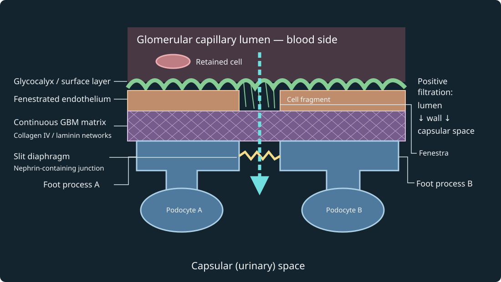

Controlled synthetic parameter sweep, not a simulation of obstruction kinetics. Positive direction is capillary lumen→capsular space. Hold capillary hydrostatic pressure 55, plasma oncotic pressure 30 and capsular oncotic pressure 0 mmHg; selected Kf=12.5 mL min⁻¹ mmHg⁻¹.

The wall is locally flattened for explanation. The two brown fragments depict an endothelial sheet interrupted by a transcellular fenestra, not an ordinary cell-to-cell gap. A continuous GBM lies beneath; separate podocytes extend foot processes onto its outer side, with a nephrin-containing diaphragm between processes. Glycocalyx is exaggerated and includes the fenestral region. The blue arrow gives the positive filtration direction; it is not a measured trajectory, a molecular count or an empty hole through the GBM. Rat EM surface-layer study and human nephrin localization support distinct structural elements, with preparation/species limits. The separate native SEM observation supplies surface-appearance context, not a registered section or a measurement of every layer.
Static/print: at capsular pressure 15 mmHg, net=55−15−30=10 and model flow=125 mL/min. At 20 mmHg, net=5 and flow=62.5 mL/min. Twelve presentation seconds sweep this parameter interval; they represent no measured biological duration. This panel has no cell leakage or tissue deformation model.